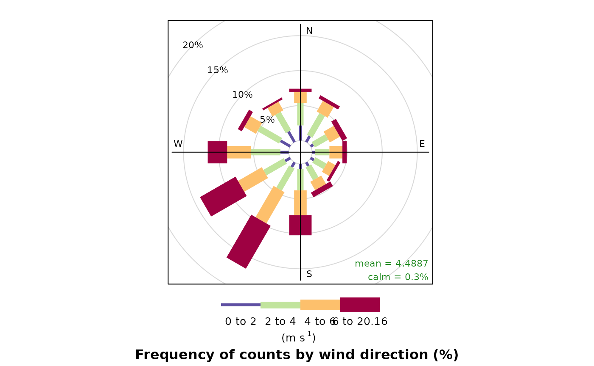
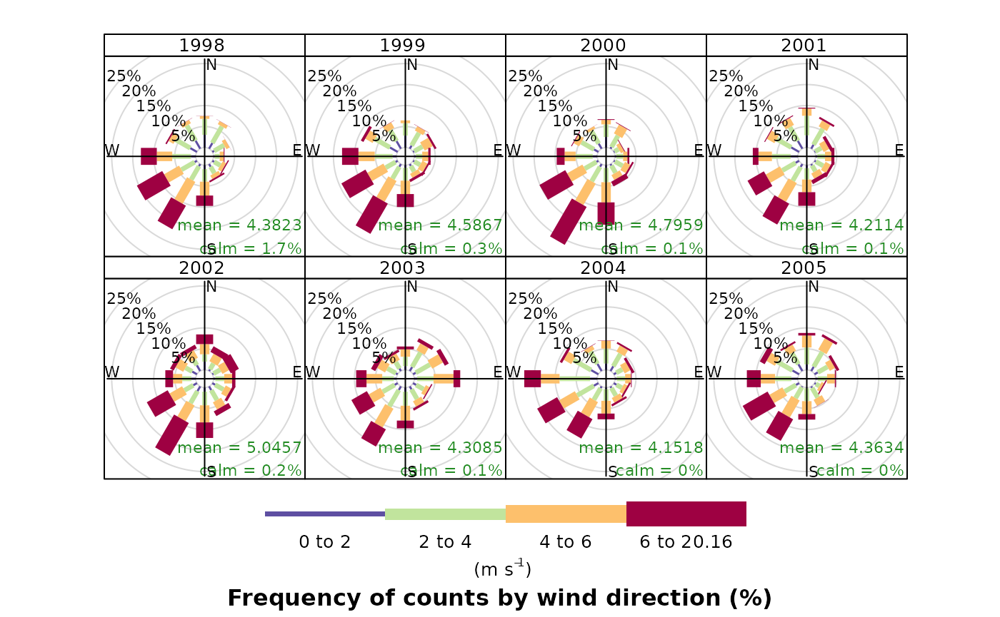
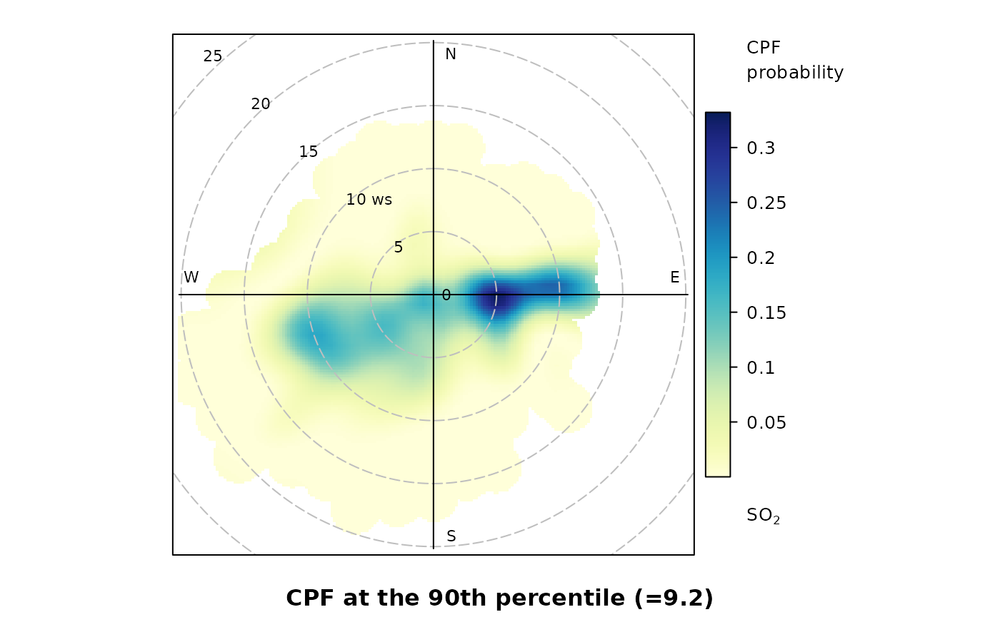

This vignette outlines some core functionality in openair. For further examples, please see the online book.
Import data from the UK Automatic Urban and Rural Network
It is easy to import hourly data from 100s of sites and to import several sites at one time and several years of data.
kc1 <- importAURN(site = "kc1", year = 2020)
kc1
#> # A tibble: 8,784 × 15
#> source site code date co nox no2 no o3 so2
#> <chr> <chr> <chr> <dttm> <dbl> <dbl> <dbl> <dbl> <dbl> <dbl>
#> 1 aurn London … KC1 2020-01-01 00:00:00 0.214 64.8 46.2 12.1 1.13 NA
#> 2 aurn London … KC1 2020-01-01 01:00:00 0.237 74.1 45.0 19.0 1.20 NA
#> 3 aurn London … KC1 2020-01-01 02:00:00 0.204 60.5 41.4 12.4 1.50 NA
#> 4 aurn London … KC1 2020-01-01 03:00:00 0.204 53.5 39.8 8.93 1.60 NA
#> 5 aurn London … KC1 2020-01-01 04:00:00 0.169 37.7 33.6 2.63 5.79 NA
#> 6 aurn London … KC1 2020-01-01 05:00:00 0.160 43.3 36.8 4.25 6.09 NA
#> 7 aurn London … KC1 2020-01-01 06:00:00 0.157 48.2 39.4 5.76 2.74 NA
#> 8 aurn London … KC1 2020-01-01 07:00:00 0.178 60.5 44.7 10.3 1.20 NA
#> 9 aurn London … KC1 2020-01-01 08:00:00 0.233 71.8 47.9 15.6 2.25 NA
#> 10 aurn London … KC1 2020-01-01 09:00:00 0.329 128. 46.9 53.2 2.25 NA
#> # ℹ 8,774 more rows
#> # ℹ 5 more variables: pm10 <dbl>, pm2.5 <dbl>, ws <dbl>, wd <dbl>,
#> # air_temp <dbl>Utility functions
Using the selectByDate() function it is easy to select
quite complex time-based periods. For example, to select weekday (Monday
to Friday) data from June to September for 2012 and for the hours 7am to
7pm inclusive:
sub <- selectByDate(
kc1,
day = "weekday",
year = 2020,
month = 6:9,
hour = 7:19
)
sub
#> # A tibble: 1,144 × 15
#> date source site code co nox no2 no o3 so2
#> <dttm> <chr> <chr> <chr> <dbl> <dbl> <dbl> <dbl> <dbl> <dbl>
#> 1 2020-06-01 07:00:00 aurn London… KC1 0.125 23.1 16.8 4.14 56.5 2.29
#> 2 2020-06-01 08:00:00 aurn London… KC1 0.133 25.2 17.8 4.79 61.7 2.68
#> 3 2020-06-01 09:00:00 aurn London… KC1 0.119 15.6 12.2 2.22 75.8 2.35
#> 4 2020-06-01 10:00:00 aurn London… KC1 0.104 13.8 11.1 1.79 87.1 1.57
#> 5 2020-06-01 11:00:00 aurn London… KC1 0.0956 14.0 11.8 1.46 96.7 1.44
#> 6 2020-06-01 12:00:00 aurn London… KC1 0.0985 11.3 9.97 0.893 106. 1.44
#> 7 2020-06-01 13:00:00 aurn London… KC1 0.0927 11.0 9.64 0.893 112. 2.03
#> 8 2020-06-01 14:00:00 aurn London… KC1 0.0927 12.5 10.8 1.14 114. 2.81
#> 9 2020-06-01 15:00:00 aurn London… KC1 0.0811 10.7 9.48 0.822 115. 2.88
#> 10 2020-06-01 16:00:00 aurn London… KC1 0.0898 13.9 11.9 1.29 104. 2.22
#> # ℹ 1,134 more rows
#> # ℹ 5 more variables: pm10 <dbl>, pm2.5 <dbl>, ws <dbl>, wd <dbl>,
#> # air_temp <dbl>Similarly it is easy to time-average data in many flexible ways. For example, 2-week means can be calculated as
sub2 <- timeAverage(kc1, avg.time = "2 week")
sub2
#> # A tibble: 27 × 12
#> date co nox no2 no o3 so2 pm10 pm2.5 ws
#> <dttm> <dbl> <dbl> <dbl> <dbl> <dbl> <dbl> <dbl> <dbl> <dbl>
#> 1 2019-12-30 00:00:00 0.135 26.2 22.7 2.34 46.4 1.94 12.5 8.43 3.94
#> 2 2020-01-13 00:00:00 0.205 74.4 37.3 24.2 30.4 2.68 18.5 13.1 3.11
#> 3 2020-01-27 00:00:00 0.143 39.4 26.7 8.24 47.8 2.72 13.9 8.45 4.51
#> 4 2020-02-10 00:00:00 0.118 19.2 16.4 1.85 63.0 3.09 9.40 5.03 6.18
#> 5 2020-02-24 00:00:00 0.144 31.4 24.5 4.50 53.5 2.61 10.4 5.99 4.54
#> 6 2020-03-09 00:00:00 0.116 19.7 17.0 1.73 60.0 2.09 10.0 5.73 4.61
#> 7 2020-03-23 00:00:00 0.132 23.2 19.8 2.26 69.1 1.90 18.9 12.3 3.61
#> 8 2020-04-06 00:00:00 0.112 27.1 24.1 1.99 72.4 2.02 26.1 18.2 2.96
#> 9 2020-04-20 00:00:00 0.103 15.8 14.1 1.13 76.7 2.09 16.8 9.60 3.45
#> 10 2020-05-04 00:00:00 0.112 17.8 15.7 1.35 76.0 1.85 13.7 8.32 3.29
#> # ℹ 17 more rows
#> # ℹ 2 more variables: wd <dbl>, air_temp <dbl>The type option
One of the key aspects of openair is the use of the type
option, which is available for almost all openair
functions. The type option partitions data by different
categories of variable. There are many built-in options that
type can take based on splitting your data by different
date values. A summary of in-built values of type are:
"year"splits data by year"month"splits variables by month of the year"monthyear"splits data by year and month"season"splits variables by season. Note in this case the user can also supply ahemisphereoption that can be either"northern"(default) or"southern""weekday"splits variables by day of the week"weekend"splits variables by Saturday, Sunday, weekday"daylight"splits variables by nighttime/daytime. Note the user must supply a longitude and latitude"dst"splits variables by daylight saving time and non-daylight saving time"wd"if wind direction (wd) is available.type = "wd"will split the data up into 8 sectors: N, NE, E, SE, S, SW, W, NW."seasonyear"(or"yearseason") will split the data into year-season intervals, keeping the months of a season together. For example, December 2010 is considered as part of winter 2011 (with January and February 2011). This makes it easier to consider contiguous seasons. In contrast,type = "season"will just split the data into four seasons regardless of the year.
type can also use variables already in the data
frame:
If a categorical variable is specified, e.g.,
sitethen that variables can be used directly e.g.type = "site".If a numeric numeric variable is specified it is split up into 4 quantiles, i.e., four partitions containing equal numbers of points. Note the user can supply the option
n.levelsto indicate how many quantiles to use.
Example directional analysis
openair can plot basic wind roses very easily provided
the variables ws (wind speed) and wd (wind
direction) are available.
windRose(mydata)
However, the real flexibility comes from being able to use the type option.

Wind roses summarising the wind conditions at a monitoring station per year, demonstrating the openair type option.
There are many flavours of bivariate polar plots, as described here that are useful for understanding air pollution sources.
polarPlot(mydata,
pollutant = "so2",
statistic = "cpf",
percentile = 90,
cols = "YlGnBu"
)